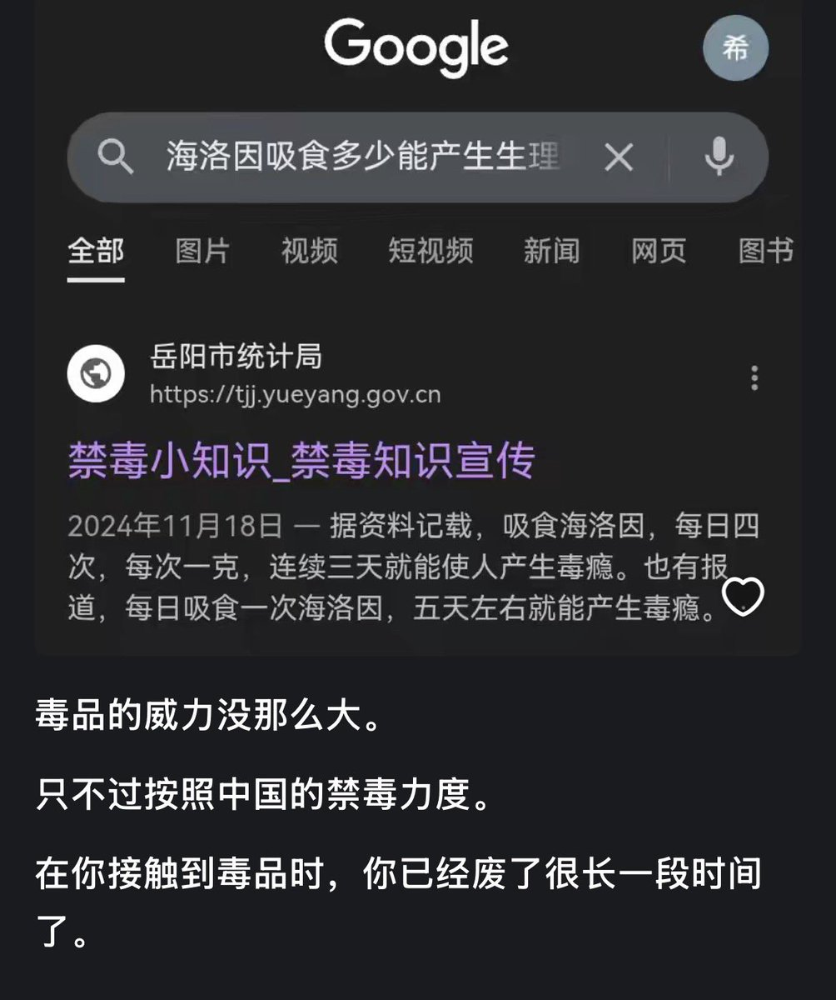

jerry
@YLS69979546
@17kxscvooo45974 按我的经验阿片类剂量比较大，每天多次的话四五天之后会有戒断反应，但是如果你多次戒断再复吸的话，耐受和戒断都会来的特别快，比如每使用一次耐受上升一点磕两天之后直接开始出戒断反应了

liyuexi263527282🏳️⚧️🍥
@17kxscvooo45974
这个报告说，吃海洛因，每天四次，每次一克，三天上瘾，可是没有耐受的前提下，第一次吸一克，我觉得第一次应该是凉凉了，没有机会上瘾的。 https://t.co/RjOcaPeBz2